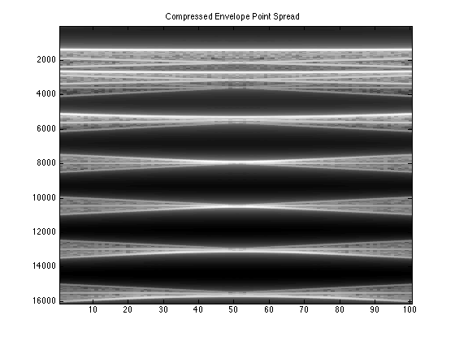
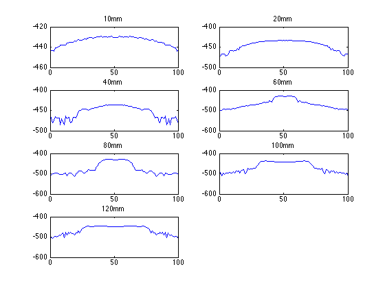
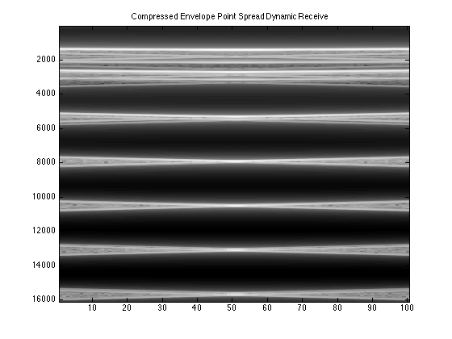
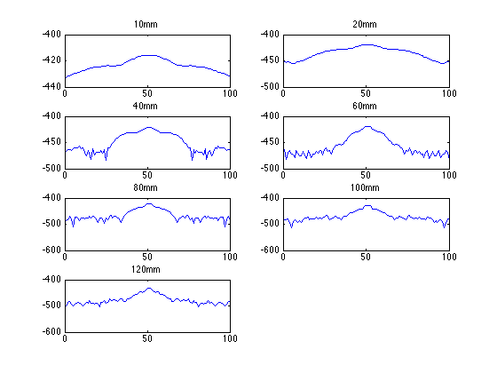

Contents
normal
field_init(-1)
f0=3e6;
fs=100e6;
c=1540;
lambda=c/f0;
element_height=5/1000;
kerf=0.1/1000;
focus=[0 0 70]/1000;
emit_aperture = xdc_linear_array (128, lambda/2, element_height, kerf, 1, 1,focus);
impulse_response=sin(2*pi*f0*(0:1/fs:2/f0));
impulse_response=impulse_response.*hanning(max(size(impulse_response)))';
xdc_impulse (emit_aperture, impulse_response);
excitation=sin(2*pi*f0*(0:1/fs:2/f0));
xdc_excitation (emit_aperture, excitation);
receive_aperture = xdc_linear_array (128, lambda/2, element_height, kerf, 1, 1,focus);
xdc_impulse (receive_aperture, impulse_response);
no_lines=100;
sector=20 * pi/180;
d_theta=sector/no_lines;
image_data=zeros(800,no_lines);
theta= -sector/2;
for i=1:no_lines;
xdc_focus (emit_aperture, 0, [70*sin(theta) 0 70*cos(theta)]/1000);
xdc_focus (receive_aperture, 0, [70*sin(theta) 0 70*cos(theta)]/1000);
point_position=[[0 0 10]/1000;[0 0 20]/1000; [0 0 40]/1000; [0 0 60]/1000;[0 0 80]/1000; [0 0 100]/1000; [0 0 120]/1000];
[v, t1]=calc_scat(emit_aperture, receive_aperture, point_position, [1;1;1;1;1;1;1]);
image_data(1:max(size(v)),i)=v;
times(i) = t1;
theta = theta + d_theta;
end
for ii=1:length(times)
samples(ii)=times(ii)*fs;
end
point_spread_envelope=zeros(max(samples)+max(size(image_data)),min(size(image_data)));
for kk=1:min(size(image_data))
point_spread_envelope(samples(kk):samples(kk)+max(size(image_data))-1,kk)=image_data(1:max(size(image_data)),kk);
end
figure;
imagesc(20*log10(abs(hilbert(point_spread_envelope))))
title('Compressed Envelope Point Spread')
colormap('gray')
abs_hilb_dB=20*log10(abs(hilbert(point_spread_envelope)));
figure;
subplot(4,2,1)
depth10=10/1000;
samp10=(depth10/1540)*2*fs;
plot(abs_hilb_dB(round(samp10)+130,:))
title('10mm')
subplot(4,2,2)
depth20=20/1000;
samp20=(depth20/1540)*2*fs;
plot(abs_hilb_dB(round(samp20)+130,:))
title('20mm')
subplot(4,2,3)
depth40=40/1000;
samp40=(depth40/1540)*2*fs;
plot(abs_hilb_dB(round(samp40)+130,:))
title('40mm')
subplot(4,2,4)
depth60=60/1000;
samp60=(depth60/1540)*2*fs;
plot(abs_hilb_dB(round(samp60)+130,:))
title('60mm')
subplot(4,2,5)
depth80=80/1000;
samp80=(depth80/1540)*2*fs;
plot(abs_hilb_dB(round(samp80)+130,:))
title('80mm')
subplot(4,2,6)
depth100=100/1000;
samp100=(depth100/1540)*2*fs;
plot(abs_hilb_dB(round(samp100)+130,:))
title('100mm')
subplot(4,2,7)
depth120=120/1000;
samp120=(depth120/1540)*2*fs;
plot(abs_hilb_dB(round(samp120)+130,:))
title('120mm')
samp=[samp10;samp20;samp40;samp60;samp80;samp100;samp120]
samp =
1.0e+04 *
0.1299
0.2597
0.5195
0.7792
1.0390
1.2987
1.5584
 
dynamic receive
field_init(-1)
f0=3e6;
fs=100e6;
c=1540;
lambda=c/f0;
element_height=5/1000;
kerf=0.1/1000;
focus=[0 0 70]/1000;
emit_aperture = xdc_linear_array (128, lambda/2, element_height, kerf, 1, 1,focus);
impulse_response=sin(2*pi*f0*(0:1/fs:2/f0));
impulse_response=impulse_response.*hanning(max(size(impulse_response)))';
xdc_impulse (emit_aperture, impulse_response);
excitation=sin(2*pi*f0*(0:1/fs:2/f0));
xdc_excitation (emit_aperture, excitation);
receive_aperture = xdc_linear_array (128, lambda/2, element_height, kerf, 1, 1,focus);
xdc_impulse (receive_aperture, impulse_response);
no_lines=100;
sector=20 * pi/180;
d_theta=sector/no_lines;
image_data=zeros(800,no_lines);
theta= -sector/2;
for i=1:no_lines
xdc_dynamic_focus (receive_aperture, 0, theta, 0);
point_position=[[0 0 10]/1000; [0 0 20]/1000; [0 0 40]/1000; [0 0 60]/1000; [0 0 80]/1000; [0 0 100]/1000; [0 0 120]/1000];
[v, t1]=calc_scat(emit_aperture, receive_aperture, point_position, [1;1;1;1;1;1;1]);
image_data(1:max(size(v)),i)=v;
times(i) = t1;
theta = theta + d_theta;
end
for ii=1:length(times)
samples(ii)=times(ii)*fs;
end
point_spread_envelope_DR=zeros(max(samples)+max(size(image_data)),min(size(image_data)));
for kk=1:min(size(image_data))
point_spread_envelope_DR(samples(kk):samples(kk)+max(size(image_data))-1,kk)=image_data(1:max(size(image_data)),kk);
end
figure;
imagesc(20*log10(abs(hilbert(point_spread_envelope_DR))))
title('Compressed Envelope Point Spread Dynamic Receive')
colormap('gray')
abs_hilb_dB_DR=20*log10(abs(hilbert(point_spread_envelope_DR)));
figure;
subplot(4,2,1)
depth10=10/1000;
sample10=(depth10/1540)*2*fs;
plot(abs_hilb_dB_DR(round(sample10)+93,:))
title('10mm')
subplot(4,2,2)
depth20=20/1000;
sample20=(depth20/1540)*2*fs;
plot(abs_hilb_dB_DR(round(sample20)+93,:))
title('20mm')
subplot(4,2,3)
depth40=40/1000;
sample40=(depth40/1540)*2*fs;
plot(abs_hilb_dB_DR(round(sample40)+93,:))
title('40mm')
subplot(4,2,4)
depth60=60/1000;
sample60=(depth60/1540)*2*fs;
plot(abs_hilb_dB_DR(round(sample60)+93,:))
title('60mm')
subplot(4,2,5)
depth80=80/1000;
sample80=(depth80/1540)*2*fs;
plot(abs_hilb_dB_DR(round(sample80)+93,:))
title('80mm')
subplot(4,2,6)
depth100=100/1000;
sample100=(depth100/1540)*2*fs;
plot(abs_hilb_dB_DR(round(sample100)+93,:))
title('100mm')
subplot(4,2,7)
depth120=120/1000;
sample120=(depth120/1540)*2*fs;
plot(abs_hilb_dB_DR(round(sample120)+93,:))
title('120mm')
sample_dB_DR=[sample10;sample20;sample40;sample60;sample80;sample100; sample120]
sample_dB_DR =
1.0e+04 *
0.1299
0.2597
0.5195
0.7792
1.0390
1.2987
1.5584
 